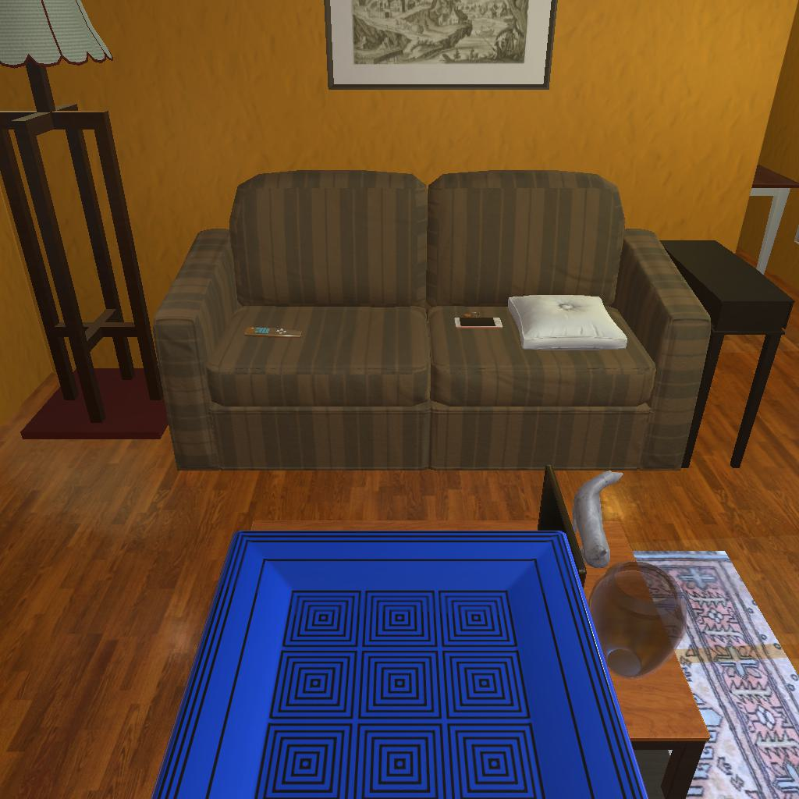

---------------------------------------------------------task: 3---------------------------------------------------------
--------------------------------------------------------------------------------------------------------------------------------------------------------------------
--------------------------------------------------------------------------------------------------------------------------------------------------------------------
Step:--------------------------------------------------------------------------14-------------------------------------------------------------------------------
----------------------------------------
VLM Prompt:
Image1:
Image2:
Image3:
**Instruction**
1. Analyze the provided images to identify all visible household objects and compare the difference between images (e.h. whether the object is opened or not and taken on hand or not), focusing on those relevant to the task description "examine the plate with the floorlamp."
2. Use the analysis of images and the task hint "The agent must find an object of the desired type, locate and turn on a light source with the desired object in-hand." to answer the question: what is the most reasonable action in the choices for the task description "examine the plate with the floorlamp"?
3. Decide and write the answer using the template: The answer is: (i): , where i is the real number. If there is no desired object in images, search every place based on **Initial Observation** to find the object. And if no one is exactly correct, choose a similar answer.
**Initial Observation**
You are in the middle of a room. Looking quickly around you, you can see armchair (1), garbagecan (1), tvstand (1), shelf (1-5), sofa (1), coffeetable (1), sidetable (1-2), drawer (1)
**Answer Choices**
(1): go to armchair 1
(2): go to garbagecan 1
(3): go to tvstand 1
(4): go to shelf 1
(5): go to shelf 2
(6): go to sofa 1
(7): go to sidetable 1
(8): go to sidetable 2
(9): go to drawer 1
(10): go to shelf 3
(11): go to shelf 4
(12): go to shelf 5
(13): use floorlamp 1
(14): examine plate 1
**Answer**
Let's think step by step by following the instructions.
----------------------------------------
----------------------------------------
Original Response:
First, we need to identify all visible household objects and see if there is any difference between the images. In all three images, we can see a sofa, a floor lamp next to it (which is off), a side table with a plate on it, and a coffee table with a decorative bowl. There is no visible change in the state of these objects between the images.
Now, based on the task description "examine the plate with the floorlamp" and the task hint, the agent needs to find the plate, have it in-hand, locate, and turn on a light source. Since the floor lamp is next to the sofa and the side table with the plate is also close by, the most reasonable action would be to first go to the side table to grab the plate and then use the floor lamp to examine it.
From the initial observation, we know there is a side table and a floor lamp in the room. Therefore, the agent should first go to the side table to pick up the plate and then turn on the floor lamp to examine the plate.
The answer is: (8): go to sidetable 2 and then (13): use floorlamp 1.
----------------------------------------
----------------------------------------
>>> Refine Original VLM Response and Get Pure Action: go to sidetable 2 and then (13): use floorlamp 1
----------------------------------------
-----------------------------------------------------------------
Running time: 18.58338165283203 seconds
Total Money: 1.3583
-----------------------------------------------------------------
-----------------------------------------------------------------
Text Observation:Nothing happens.
-----------------------------------------------------------------
UNSUCCEED